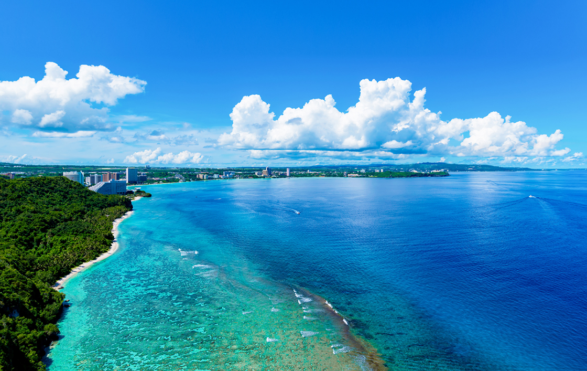
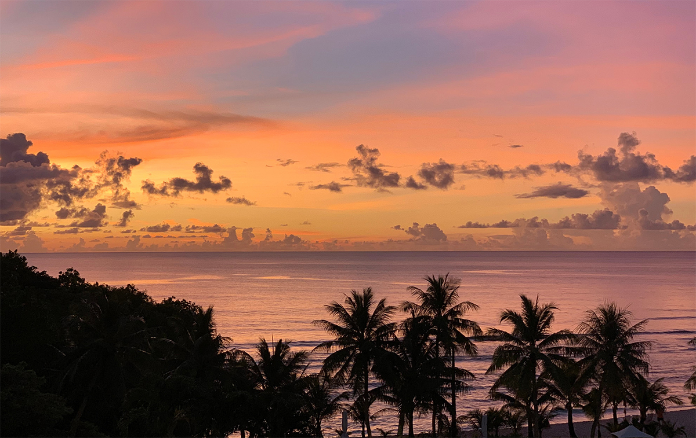
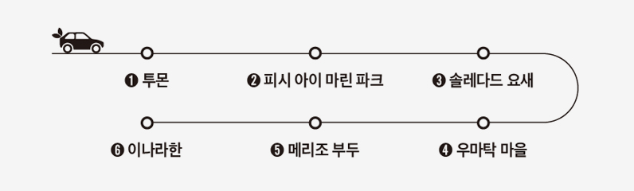
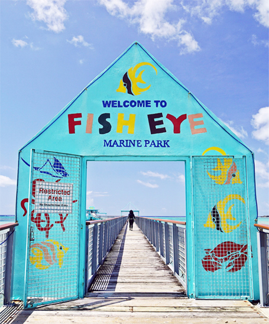
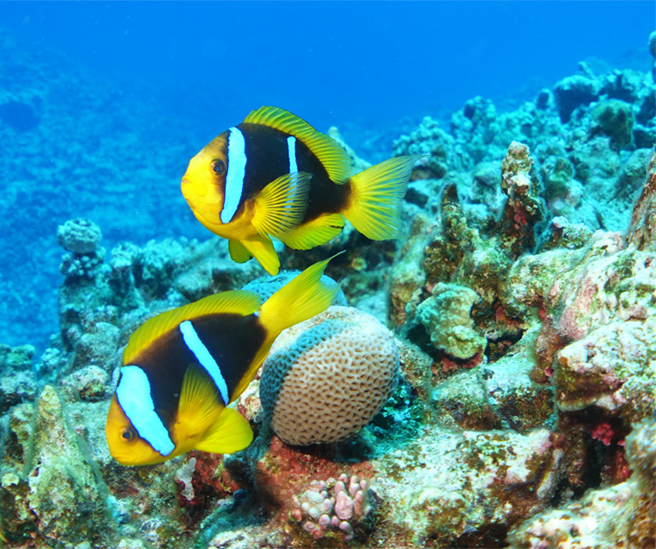
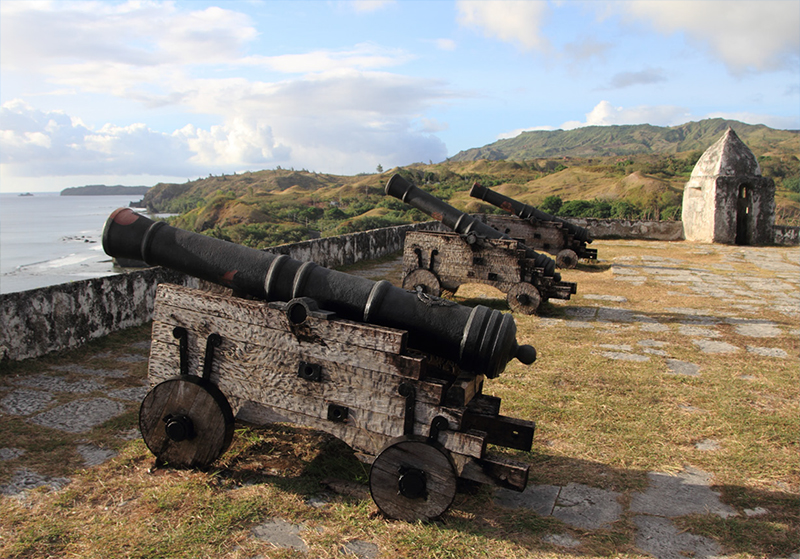
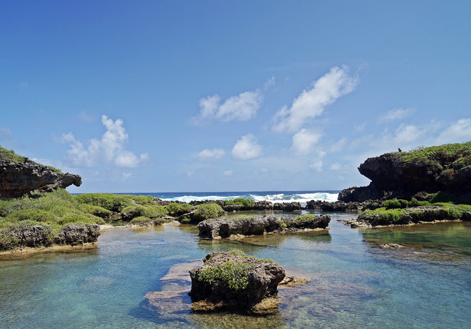
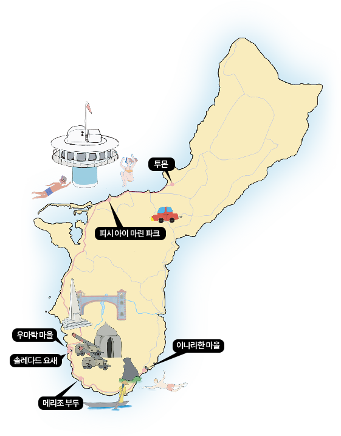
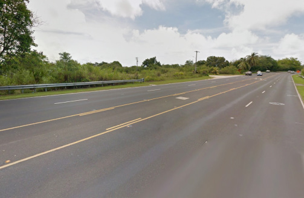

푸른 바다의 전설,
괌으로 떠나는 도로 여행
단순히 인사말을 넘어 따뜻한 환대가 느껴지는 말이다. 코로나 이후 다시 찾은 괌은 여전히 아름다웠다.
따스한 바람결이 두 볼을 스치며 인사를 전했고, 빛나는 윤슬*이 바다 위로 시선을 이끌었다.
휴식을 찾아 떠난 괌. 괌에서 만난 보석 같은 풍경을 전한다.
*윤슬: 빛에 비치어 반짝이는 잔물결을 뜻하는 순우리말
괌은 남북길이 48km, 폭 6~14km, 제주도의 3분의 1 크기다. 작은 섬이지만 천혜의 자연환경을 품고 있어 구석구석 숨겨진 보물을 찾는 재미가 쏠쏠하다. 특히 괌은 해안도로를 따라 즐기는 자동차 여행이 유독 유명하다. 그도 그럴 것이 대중교통 이용이 쉽지 않기 때문. 팬데믹 기간 동안 멈춰선 트롤리 버스가 최근 운행을 재개했지만 주요 호텔과 쇼핑몰을 잇는 한정적인 노선인데다가 운행 간격도 넓은 편이다. 이런 이유로 괌 여행자들은 대부분 렌터카를 빌리거나 픽업과 드롭을 포함한 투어 프로그램을 이용한다. 차를 타고 도로를 달리다 보면 멈춰 서고 싶은 곳이 한둘이 아니다.
괌 여행을 계획한다면 면허증은 필수라고 할 수 있다. 마침 괌에서는 별도의 국제운전면허증 없이 국내 운전면허증만으로도 렌터카를 빌릴 수 있다는 사실(30일간, 12인승 이하)!
괌 여행은 크게 북부와 남부로 나뉘는데 북부는 군사지역인데다가 관광지가 거의 없어 때 묻지 않은 거친 자연이 펼쳐진다. 일부 지역은 휴대전화가 터지지 않는 곳도 있으니 안전에 유의할 것. 반면 괌 남부는 해변을 따라 마을과 관광지 등이 모여 있어 볼거리가 풍성하다.

괌 여행의 하이라이트는 남부지역이다. 하루를 꼬박 투자해도 아깝지 않을 만큼 가볼 만한 곳이 많다. 산허리를 꺾어 돌면 험준한 산길이 나타나고, 언덕을 넘어가면 드넓은 바다가 펼쳐진다.
이런 자연 경관이 펼쳐지다 보니 괌 남부 지역의 여행 비법엔 특별한 것이 없다. 도로 위를 달리다 마음에 드는 장소가 나오면 잠시 차를 세우고 시간을 보내면 그만이니까. 발길 닿는대로, 아니 바퀴가 굴러 가는대로 마음껏 풍경을 즐기는 것이 최고의 여행 방법이다. 야자수 그늘 아래 누워 낮잠을 자거나 발길 닿는대로 해변을 산책하거나. 이국적인 풍경을 배경으로 인생샷을 남겨봐도 좋다.

괌 여행의 시작점은 투몬이다. 대형 호텔, 리조트, 쇼핑몰, 식당 등 편의시설이 모여있는 투몬에서 드라이브를 시작했다. 1번 도로를 타고, 남쪽으로 가면 2A도로가 나온다. 2A도로를 지나 2번 도로로 들어가면 우마탁 마을이 보인다. 아산에서 우마탁으로 이어지는 구간의 풍경이 압권이다. 관광 명소로 손꼽히는 전망대만 해도 다섯 곳(아산 전망대, 셀라만 전망대, 세티만 전망대, 파라 이 라라히타 기념공원, 솔레다드 요새)에 이르니 말 다했다. 괌 전망대 도장 깨기를 하고 싶다면 5곳 모두 둘러봐도 좋지만 한 곳만 꼽자면 솔레다드 요새를 추천한다.

청정한 괌 바다를 온몸으로 느낄 수 있는 방법은 역시 수중 액티비티가 제격이다. 코로나19 이후 액티비티 업체 대부분이 지난해까지 임시 휴업 상태였지만 최근 하나, 둘씩 운영을 재개 중이다. 그중에서 피시 아이 마린 파크는 괌의 대표적인 스노클링&스쿠버 다이빙 포인트. 만일 바다에 들어가는 것이 두렵더라도 걱정 말자. 피시 아이 마린 파크는 해중전망대로도 유명한 곳이니! 해중전망대는 말 그대로 바다 속에 있는 전망대다. 바다 위에 놓인 300m 길이의 나무 데크를 따라 걸어 들어가면 아름다운 해양 동식물을 360도로 볼 수 있는 해중전망대가 나온다. 계단을 따라 해저로 내려가면 수심 9m에서 물 한 방울 묻히지 않고 바닷속을 구경할 수 있다. 이런 장점 덕분에 어린아이를 동반한 가족들도 부담없이 찾기 좋다.
괌 바다를 체험하는 가장 쉽고 재밌는 방법은 스노클링이다. 해중전망대 주변에는 영화 ‘니모를 찾아서’와 ‘도리를 찾아서’의 주인공인 흰동가리와 블루탱 등 화려한 열대어를 포함해 200여 종이 넘는 물고기가 살고 있다. 산호초와 물고기 떼들이 한데 모여 춤을 추는 신비로운 풍경이 눈앞에 펼쳐진다. 팬데믹 기간 동안 관광객이 찾지 않아서일까. 원래도 맑은 바닷 속 환경이 한층 더 투명해진 느낌이다.
피시 아이 마린 파크에서는 스노클링 외에도 돌핀 크루즈, 제트스키, 땅콩보트, 바나나보트, 패러세일링, 스쿠버 다이빙 등 다양한 수중 액티비티를 취향에 맞게 즐길 수 있다. 모처럼 괌까지 찾았다면 에메랄드 바닷속에 온몸을 맡겨보는 것도 좋지 않을까. 유유자적 여행을 즐기다 보면 어느새 시간이 훌쩍 떠나있을 것이다.


우마탁 마을을 지나면 오른쪽 언덕에 솔레다드 요새가 있다. 19세기 초, 스페인 식민지 시절에 적을 감시하고, 마을을 지키기 위해 만든 요새다. 솔레다드 요새 앞, 우마탁 베이를 드나드는 스페인 함선을 지키기 위해 요새를 만들었다. 전망대에 서면 마을과 바다 풍경이 한눈에 들어온다. 햇빛에 비쳐 반짝이는 바다의 물결이 유난히도 예쁘다. 잠시 일터의 책상을 벗어나 탁 트인 남국의 풍경을 마주하고 있는 것 자체가 힐링이다. 답답했던 가슴이 뻥 뚫리는 기분이랄까.


솔레다드 요새를 등지고 내려가면 우마탁 마을이 나온다. 포르투갈 출신 탐험가인 페르디난드 마젤란은 1519년 세계 일주에 나섰고, 1521년 3월 6일. 괌 남부 해안 우마탁 마을에 도착했다. 배를 고치기 위해 잠시 들른 것을 계기로 괌의 존재가 알려졌고, 이후 괌은 333년간 스페인 통치를 받았다. 이처럼 우연한 계기로 역사가 시작되기도 한다. 5백여 년 전 마젤란이 괌을 발견하지 못했더라면 괌의 운명은 어떻게 달라졌을까.
우마탁 마을을 지나 이나라한 마을로 가는 길, 메리조 부두에 차를 멈춰 세웠다. 메리조 부두에는 코코스 섬으로 향하는 배가 드나드는데 주말에는 현지인들의 피크닉 장소로 인기가 많다. 곳곳에서 고기 굽는 연기가 진동을 한다. 야외 바비큐를 즐기는 사람들이 많은데 괌 사람들의 바비큐 사랑은 상상초월이다. 메리조 부두에 들른 이유는 바비큐가 아닌 인생샷 때문이다. 부두로 들어가 나무로 만든 데크 끝에 걸터앉으면 풍경화 속 주인공처럼 예쁜 사진을 남길 수 있다.
괌 남부투어 마지막 코스는 이나라한 마을이다. 한국의 예술가들은 2016년과 2018년. 두 차례 이나라한 마을을 찾았다. 주민들이 떠나고 남은 방치된 집 담벼락에 벽화를 그려 생기를 불어 넣었다. 코로나로 인해 벽화 프로젝트가 잠시 중단되었다가 지난 해 가을, 4년 만에 다시 ‘괌 컬러 웨이브(Guam Color Wave)’라는 이름으로 벽화 프로젝트가 다시 열렸다. 국내 유명 아티스트 4인이 벽화 작업을 진행했는데 벽화를 포토월 삼아 기념사진을 남기고 왔다.
이나라한 마을을 구경하고, 자연 풀장으로 발걸음을 옮겼다. 화산활동으로 인해 만들어진 침식 지형이 자연 풀장을 만들었다. 흘러내린 용암이 굳어 바닷물을 막았는데 움푹 파인 지형에 바닷물이 층층이 들어찼다. 용암 지형이 천연 방파제 역할을 해서 거센 파도가 몰아쳐도 자연풀장 안쪽은 잔잔하기만 하다. 순간 수영복을 챙겨오지 않은 것을 후회했다.
2022년 6월 12일 부터 미국으로 입국하는 항공 승객에게 COVID-19 바이러스 검사 음성 결과서 또는 회복 문서를 요구하지 않습니다. 미 FDA 또는 WHO가 인정한 백신을 접종 완료 (2차 접종) 후 2주가 경과한 사람은 격리 없이 입국이 가능합니다. (* 2023년 1월 20일 기준 정보입니다.)
투몬
괌의 최중심지이자 번화가인 투몬은 다양한 쇼핑센터 및 호텔, 휴양과 레저 등을 다채롭게 즐길 수 있는 곳이다. 메인 도로만 살짝 벗어나도 에메랄드빛 바다를 만날 수 있어 괌의 매력을 온몸으로 느끼기에 좋다.
피시 아이 마린 파크
아름다운 해양 동식물을 360도로 볼 수 있는 해중전망대. 물에 들어가지 않고도 산호와 다양한 열대어들을 구경할 수 있는 재미가 있는 곳이다. 특히 해중 전망대에서 보는 일몰이 환상적으로 괌에서도 손꼽힐 정도로 아름답기로 유명하다.
우마탁 마을
포르투칼 탐험가 마젤란에 의해 발견된 고즈넉한 시골 마을. 스페인 시대의 유적인 산 디오니시오 교회 등이 있다. 마젤란의 상륙 기념비와 스페인 양식으로 지어진 우마탁 다리 등이 관광 명소로 알려졌다.
솔레다드 요새
평화로운 우마탁 마을과 에메랄드빛 베이가 한눈에 볼 수 있는 남부 여행의 하이라이트. 19세기 초 스페인 범선과 해적들로부터 마을을 보호하기 위해 세운 요새로 그 당시 감시탑으로 쓰인 작은 초소와 3개의 대포가 잘 보존돼 있다.
메리조 부두
괌의 최남단 마을로 차모로어로 ‘작은 물고기’란 뜻의 부둣가. 각종 해양 스포츠를 즐길 수 있을 뿐 아니라 나무 데크로 만든 부두가 있어 현지 아이들의 수영장으로 사랑받고 있다.
이나라한 마을
자연이 만들어놓은 천연 풀장으로 유명한 곳. 아이들이 놀기 좋은 풀장과 수심이 조금 깊은 다이빙 풀장, 언덕 위에서 지평선을 바라볼 수 있는 뷰 전망 포인트 등이 인기다. 화산활동과 바닷물의 침식으로 인해 만들어진 계단 형식의 독특한 풍경이 매력적이다.

공통 중앙 차로
괌에는 양방향 운전자가 함께 사용하는 공통 중앙 차로가 있다. 좌, 우, 유턴 등이 원활해지도록 만든 차로인데, 이 차로를 이용할 때는 일시 정지한 뒤 움직여야 한다. 양방향에서 차량이 진입하는 만큼 운전 시 주의가 필요하다.
아이와 함께 탄다면?
만 4세 미만 유아는 유아 시트가, 만 4세~11세 미만 어린이 중 신장이 145cm 이하라면 보호 의자가 필수이다. 또 만 11세 미만 어린이를 보호자 없이 차에 방치하면 안 된다.
STOP 표지에 유의
괌 도로에서 STOP 표지판이 보일 때는 무조건 정지해야 한다. 통학버스를 만났을 때도 마찬가지다. 통학버스에서 어린이가 모두 내릴 때까지 양방향의 모든 차량이 정지해야 한다.
 출처. 구글 스트리트 뷰 캡쳐